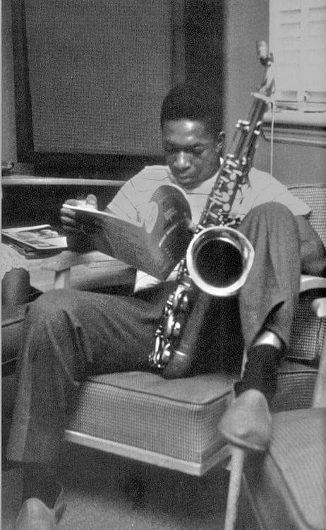
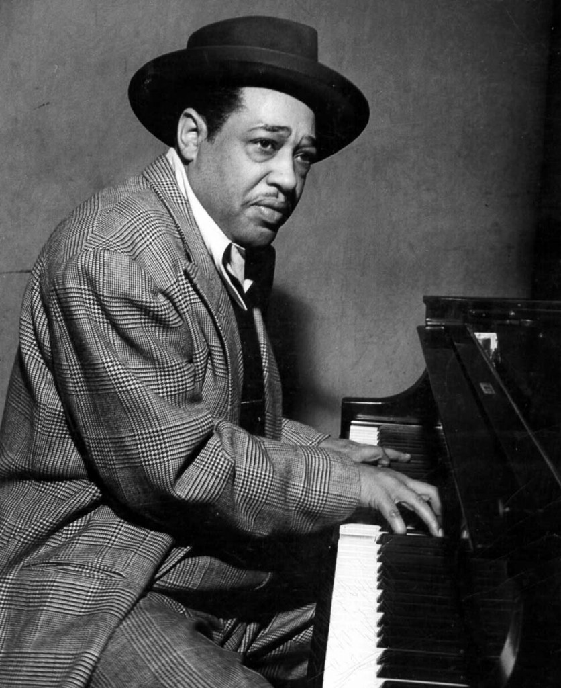
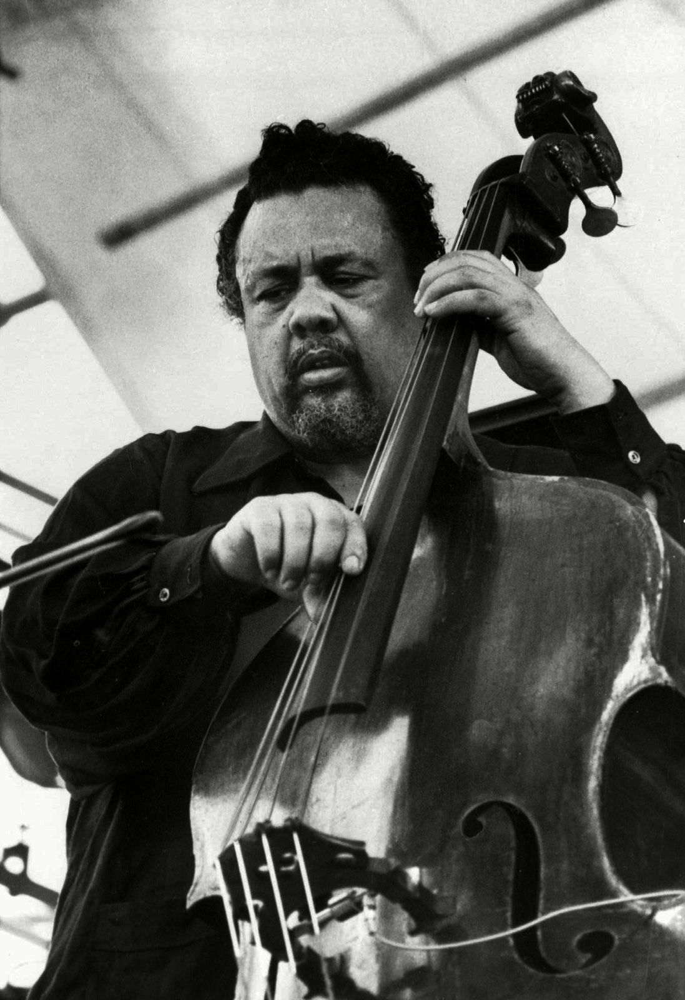

Um pouco de história
Jazz é uma manifestação artístico-musical
originária de comunidades de Nova Orleães,
nos Estados Unidos. Tal manifestação teria surgido
por volta do final do século XIX na região
de Nova Orleães, tendo origem na cultura popular
e na criatividade das comunidades negras que ali viviam,
um de seus espaços de desenvolvimento mais importantes.
Alguns dos principais nomes do Jazz
Durante alguns anos o jazz se tornou a música
popular. Esse período é compreendido entre o fim
dos anos 30's até o início dos anos 70's. Alguns
dos grandes nomes do Jazz como
John Coltrane,
Duke Ellington e
Charles Mingus. Cada um representa um período e um jeito
de se tocar Jazz.